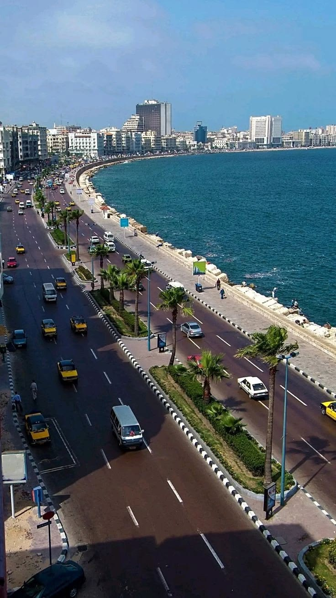
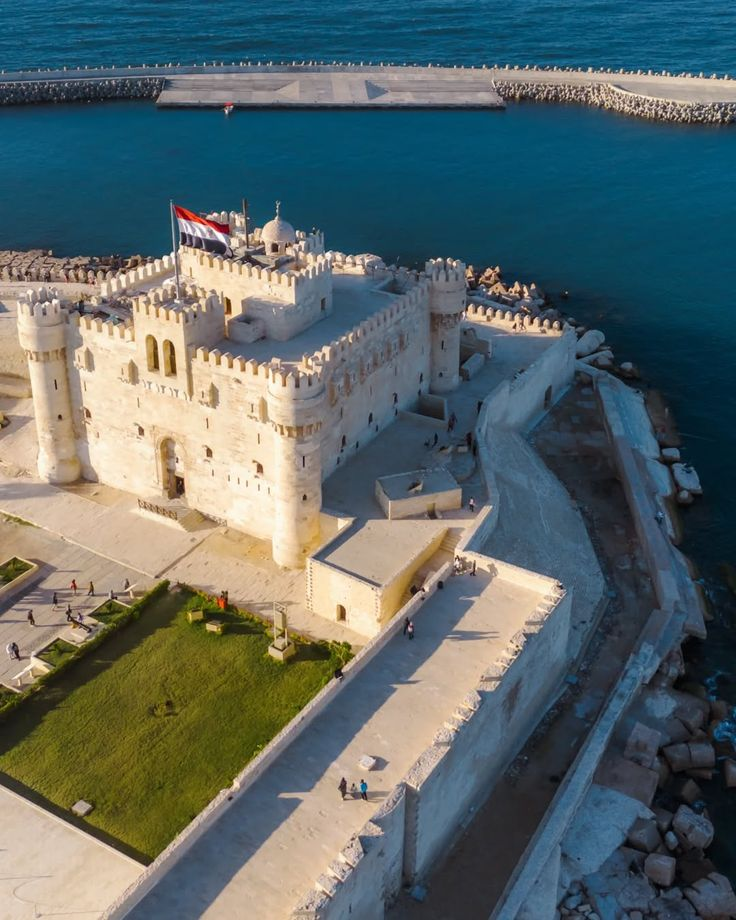
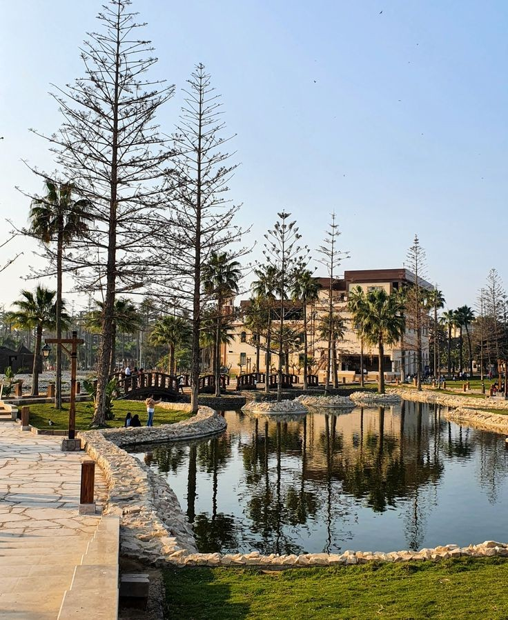

Alexandria Corniche
Location: Along the Mediterranean coast, Alexandria, Egypt. The Alexandria Corniche is a long seaside promenade filled with cafes, restaurants, and hotels. It is one of the best places for walking while enjoying the sea view and fresh air.

Bibliotheca Alexandrina
Location: El Shatby, Alexandria, Egypt. The Bibliotheca Alexandrina is a modern cultural landmark inspired by the ancient Library of Alexandria. It contains millions of books, museums, exhibitions, and a planetarium, making it a major center for knowledge and culture.

Citadel of Qaitbay
Location: Eastern Harbour, Alexandria, Egypt. The Citadel of Qaitbay is a historic fortress built on the site of the ancient Lighthouse of Alexandria. It offers stunning views of the Mediterranean Sea and is one of the most iconic landmarks in the city.

Lighthouse of Alexandria (Pharos of Alexandria)
Location: Same site as Citadel of Qaitbay, Alexandria, Egypt. The Lighthouse of Alexandria was one of the Seven Wonders of the Ancient World. Although it no longer exists, its legacy remains at the site of the Citadel and represents ancient engineering brilliance.

Montaza Palace Gardens
Location: Montaza District, Alexandria, Egypt. Montaza Palace Gardens surround a royal palace overlooking the Mediterranean Sea. The area is filled with greenery, palm trees, and scenic walking paths, making it ideal for relaxation and picnics.

Stanley Bridge
Location: Stanley, Alexandria Corniche, Egypt. Stanley Bridge is one of Alexandria’s most famous modern landmarks. It offers beautiful sea views, especially at sunset, and is a popular spot for walking and photography.

Roman Amphitheatre
Location: Kom El-Dikka, Alexandria, Egypt. The Roman Amphitheatre is one of the most important archaeological sites in Alexandria. It dates back to the Roman era and features well-preserved marble seating and ancient structures. The site reflects the city’s rich Roman heritage and is a unique destination for history lovers and tourists interested in ancient civilizations.